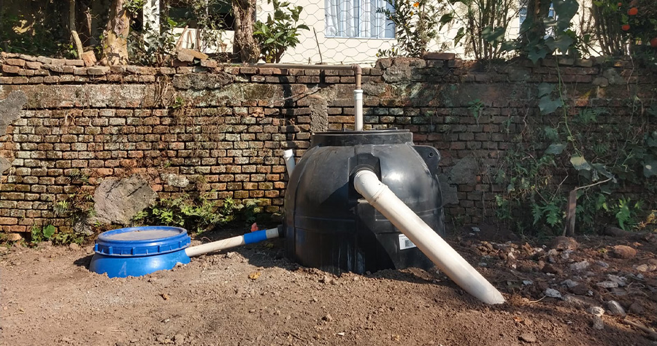
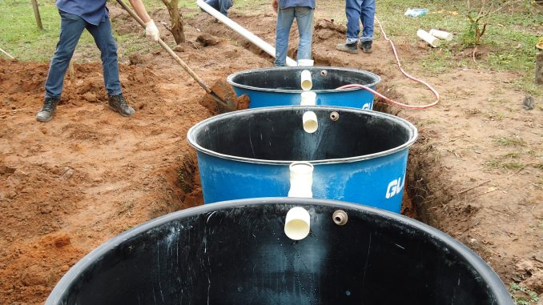

Saneamento Básico Rural
Início Informações Imagens


Segundo a Organização das Nações Unidas para a Agricultura e Alimentação (FAO), a agricultura de base familiar reúne 14 milhões de pessoas, mais de 60% do total de agricultores, e detém 75% dos estabelecimentos agrícolas no Brasil.

Saneamento básico rural consiste basicamente na coleta e tratamento do esgoto sanitário, no abastecimento de água para consumo humano, no tratamento e reuso de efluentes para a produção e no manejo e destinação do lixo (resíduos sólidos) nas propriedades.
É comum nos estabelecimentos agrícolas o uso de fossas rudimentares (fossa "negra", poço, buraco, etc.), que contaminam águas subterrâneas e, consequentemente, os poços de água, os conhecidos poços "caipiras". Assim, há a possibilidade de contaminação dessa população, por doenças veiculadas pela urina, fezes e água, como hepatite, cólera, salmonelose, verminoses, entre outras.
A ampliação dos serviços de saneamento básico, especialmente no que diz respeito ao aumento de domicílios abastecidos com água de qualidade, é fundamental para a saúde e, em particular, para redução da mortalidade infantil.